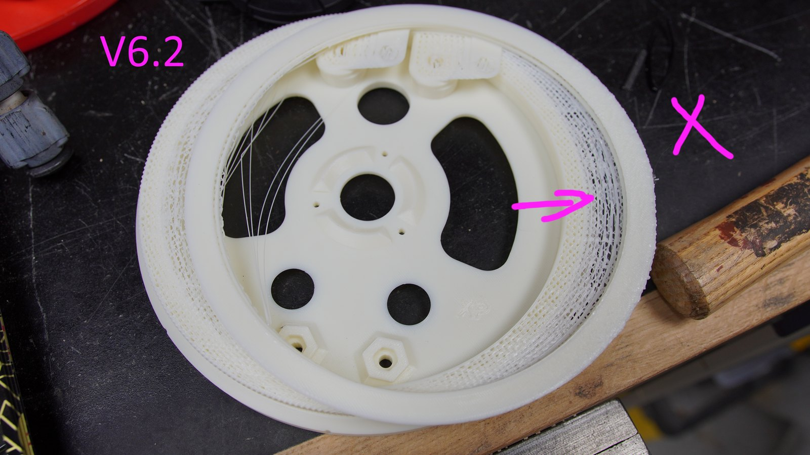
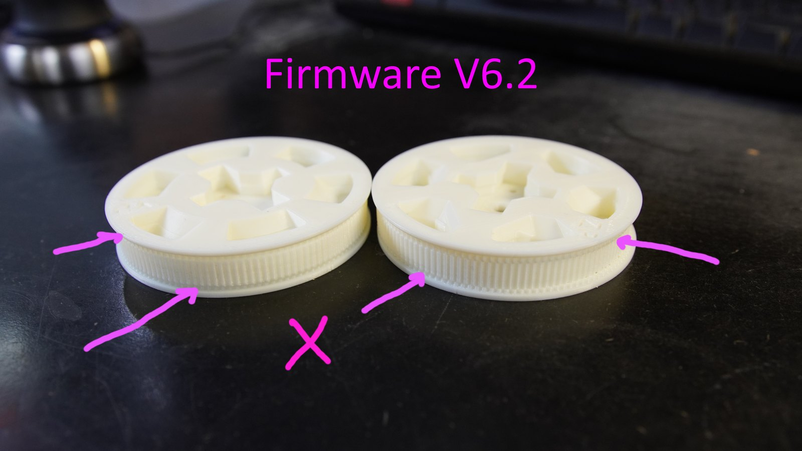
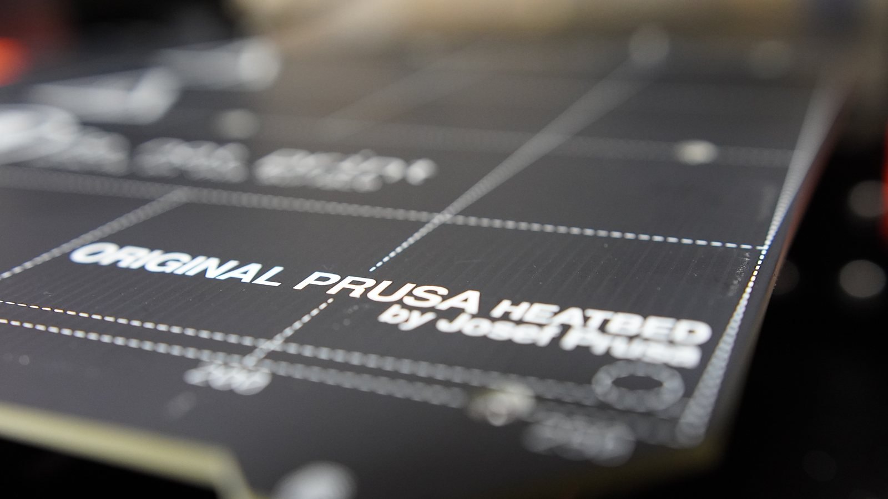
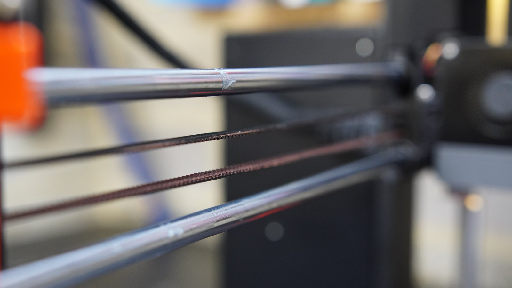
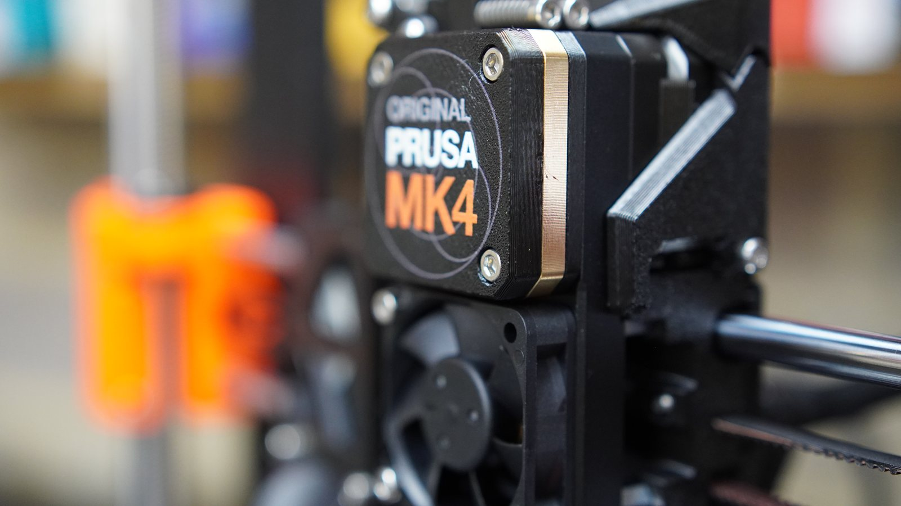
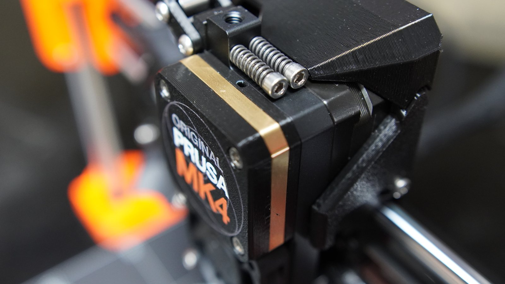
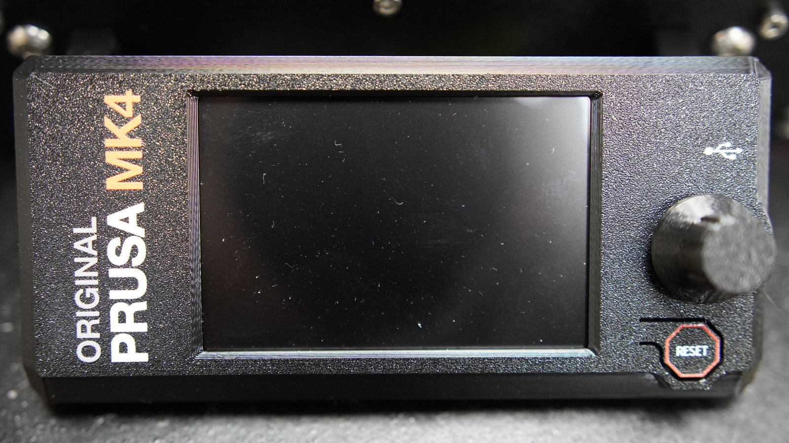

Opening the boxes
It is Christmas after all.
Machines that make machines / Prusa MK4
I got an Original Prusa MK4 kit for Christmas.

Remarkably little. One print let go of the bed and welded itself into a blob around the hotend, which took a while to pick off. The fans failed and were replaced. The one that still annoys me: run out of filament mid-print and the printer can get stuck in a loop, refusing to admit that new filament has arrived. Separately, and written up below, a firmware update quietly broke printing altogether.
Nothing about the choice. I looked at Bambu and went Prusa because it is open, and Bambu have since been closing off access to their own software, which settled the argument retrospectively. The only real limit is build volume — I want to print a BB-8 and cannot. That is an argument for a bigger printer, and I would rather build that one than buy it.
It is Christmas after all.
My wife asked me to fix this while I was building the printer. Fair enough.
a serious repair to a seasonal object.
Yes, the Christmas decoration made it onto the welding table.
Uprights and plates.
Small screws and keyed housings can be tricky.
I've got an idea for these big bearings.
Printed brackets becoming part of the machine that will print more brackets.
Build arc
Sorting screws into little piles.
Rods, blocks, and carriage.
Cool gantry.
The hot end.
Airflow hardware.
Print head.
Cable routing and controller wiring.
Finding more bits.
assembling more bits.
Wiring the machine.
The nearly finished MK4 on the bench.
Did I say nearly finished, and no it wasn't easy.
you spin me right round, baby right round
Debugging / firmware regression
While printing ARCTOS robot-arm gears, I hit repeatable layer shifts after updating the Prusa MK4 firmware. The first checks were mechanical: belts, screws, calibration, slicer settings. Nothing obvious explained it.
Rolling back from firmware 6.2.x to 6.1.3 made the same parts print successfully. Same printer, same class of part, different firmware behaviour.
I added the result to the public Prusa-Firmware-Buddy issue threads. Other users reported similar failures, Prusa tied the regression to internal ticket BFW-6795, and firmware 6.2.2 was later released with a fix.



Off the bed









